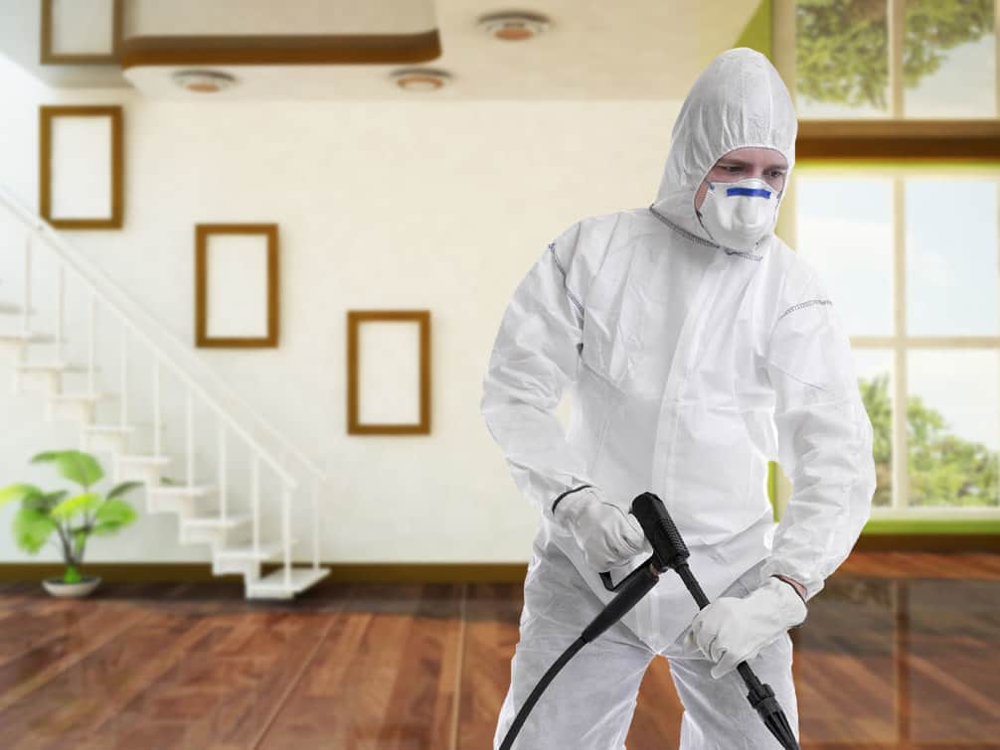

Blog المدونة
عن شركة المتوكل
تعتبر شركةالمتوكل أحدي الشركات العاملة بالمملكة العربية السعودية ولها تاريخ طويل من الخدمات الكثيرة والمتنوعة التى مازالت تقدمها للكثير من العملاء داخل جميع مدن وأحياء المملكة حيث نقدم أفضل ما لدينا من خلال مجموعة الشركات التالية والتي من خلالها ستتلقي كل ما تحتاج إلية في كل المجالات المختلفة فنحن نعمل منذ عام 2015 ولنا سابقات اعمال فى مختلف المجالات الحيوية التى نخدم من خلالها عملائنا ونوفر لهم أرخص الأسعار وبأعلى جودة
